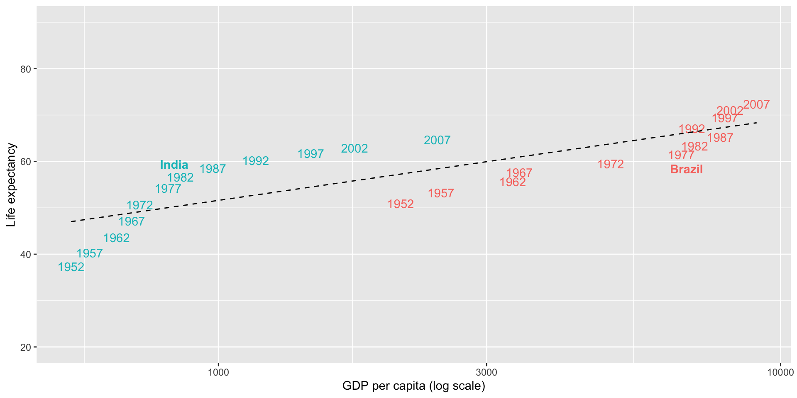
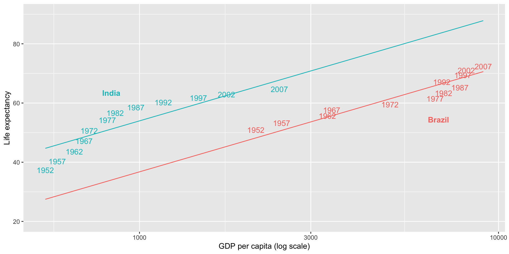
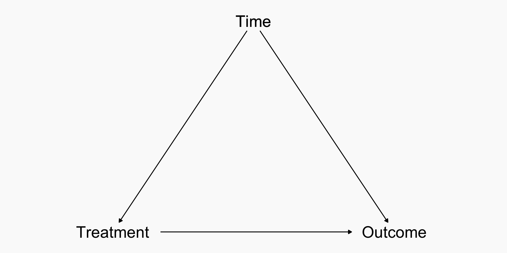
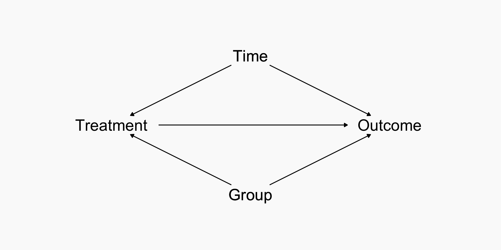
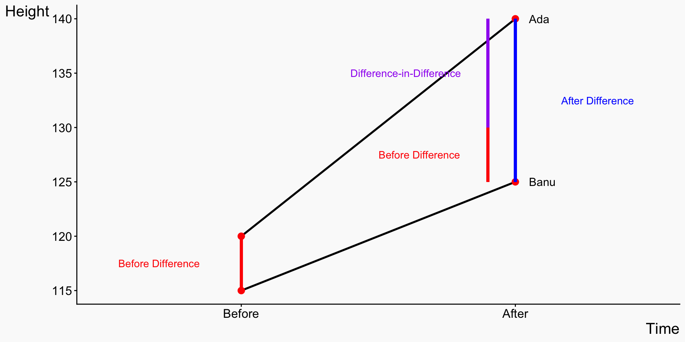
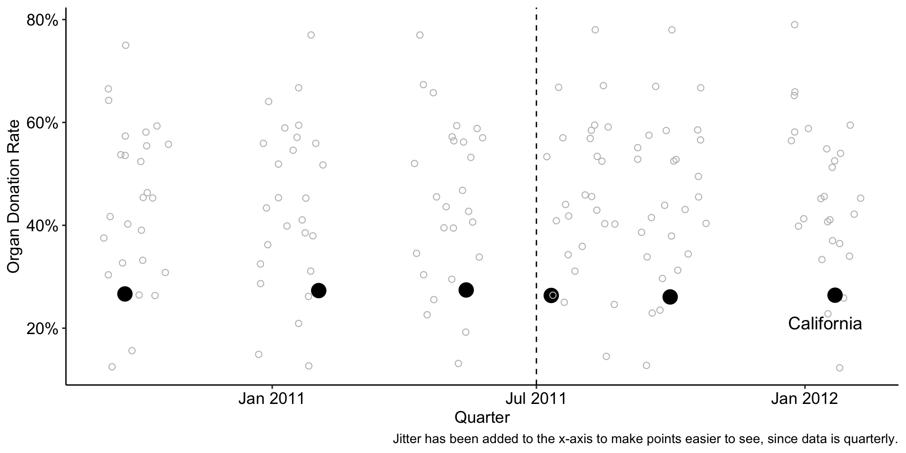
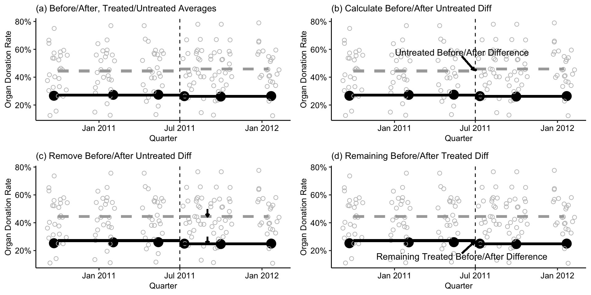
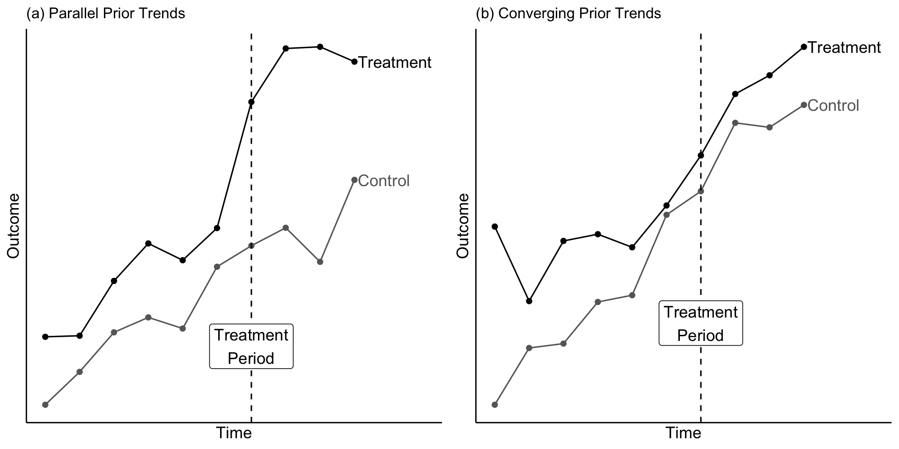
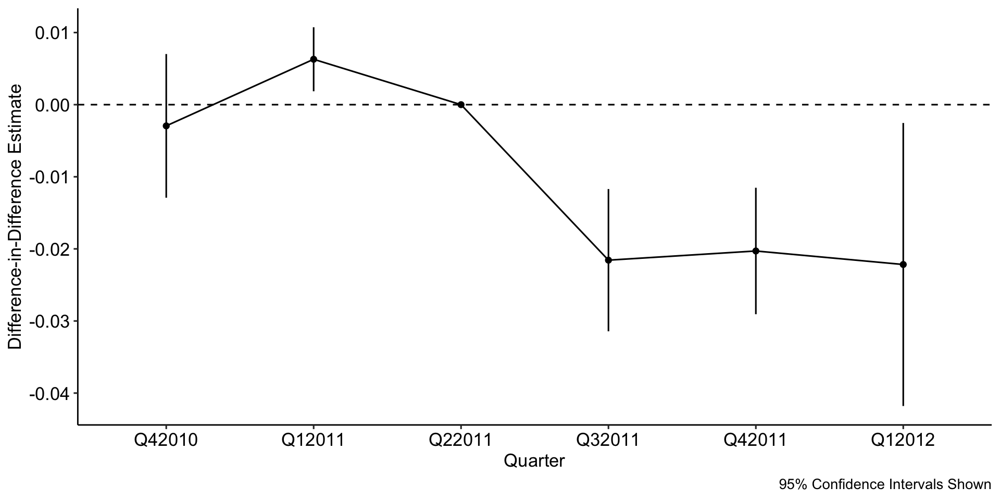

Introduction to Health Analytics
Panel data: Difference-in-Differences and Fixed Effects
Dr. Sam Burn
Course road map
| Lecture | Topic |
|---|---|
| 1 | Introduction to health data & R |
| 2 | Data visualization |
| 3 | Data wrangling & exploratory data analysis |
| 4 | Causal inference |
| 5 | Linear regression |
| 6 | Linear regression: uncertainty & hypothesis testing |
| 7 | Panel data: difference-in-differences & fixed effects |
| 8 | Limited dependent variables: LPM, logit, probit |
| 9 | Introduction to machine learning for health analytics |
| 10 | Course review |
The health analytics pipeline

Today
- Why unobserved heterogeneity is a problem
- Fixed effects
- Difference-in-differences (DiD)
- Assumptions, diagnostics, and pitfalls
- Implementation in R
Motivation: the core problem
- In health analytics, we often compare:
- People
- Hospitals
- Regions
- Countries
- These units differ in ways we cannot fully observe:
- Patients differ in baseline health and preferences
- Hospitals differ in quality and organisation
- Regions / countries differ in institutions, resources, culture, history
- These differences are often:
- Persistent
- Hard or impossible to measure
- If we can’t observe or measure these differences, how can we control for them?
Working example: GDP per capita and life expectancy
- Suppose we observe outcomes for countries i over time t.
- We are interested in the effect of some variable X_{it} (e.g. GDP per capita) on an outcome Y_{it} (e.g. life expectancy).
- Suppose the true data-generating process is: Y_{it} = \alpha + \beta X_{it} + U_i + \varepsilon_{it}
- where:
- X_{it} is GDP per capita
- U_i is an unobserved, time-invariant country characteristic
(institutions, geography, culture) - \varepsilon_{it} is a transitory shock
- We care about the causal effect \beta.
Why pooled OLS is biased
- If we ignore U_i and estimate: Y_{it} = \widetilde{\alpha} + \widetilde{\beta}X_{it} + e_{it}
- where the composite error term is: e_{it} = U_i + \varepsilon_{it}
- Then: \mathbb{E}[\widetilde\beta] = \beta + \frac{\text{Cov}(X_{it}, U_i)}{\text{Var}(X_{it})}
A strategy: compare countries to themselves
- One way to address this problem:
- Compare outcomes within countries
- Rather than across countries
- Key idea: If we can difference out what makes countries persistently different, we reduce bias
- This is the logic behind fixed effects.
- Fixed effects control for:
- All unobserved characteristics
- That are constant within a country
- Examples:
- Geography
- Long-run institutional quality
- Deep cultural factors
Fixed effects estimation
Fixed effects estimation
- With repeated observations for each country, estimate: Y_{it} = \alpha_i + \beta X_{it} + \varepsilon_{it}
- where \alpha_i is a country fixed effect
- In practice, this means:
- A separate intercept for each country
- Equivalently, a set of country dummy variables
- \alpha_i absorbs all unobserved, time-invariant country characteristics U_i
- Equivalent to regressing “demeaned” Y on “demeaned” X Y_{it} - \overline{Y}_i= \beta(X_{it} - \overline{X}_i)+\varepsilon_{it}-\overline{\varepsilon}_{i}
- Regression uses only within-country changes over time
Graphical illustration: pooled OLS
Graphical illustration: country fixed effects

Implementing fixed effects in R: pooled regression
- Pooled regression: \text{lifeExp}_{it}=\alpha + \beta \log (\text{gdpPercap}_{it}) + \varepsilon_{it}
m_pooled
Dependent Var.: lifeExp
Constant -9.101** (2.928)
log(gdpPercap) 8.405*** (0.3567)
_______________ _________________
S.E.: Clustered by: country
Observations 1,704
R2 0.65225
Adj. R2 0.65204
---
Signif. codes: 0 '***' 0.001 '**' 0.01 '*' 0.05 '.' 0.1 ' ' 1- 10% increase in GDP per capita associated with \approx 0.84 additional years of life expectancy
Implementing fixed effects in R: with country FE
- Regression with country FE: \text{lifeExp}_{it}=\alpha_i + \beta \log (\text{gdpPercap}_{it}) + \varepsilon_{it}
m_countryfe
Dependent Var.: lifeExp
log(gdpPercap) 9.769*** (0.7015)
Fixed-Effects: -----------------
country Yes
_______________ _________________
S.E.: Clustered by: country
Observations 1,704
R2 0.84644
Within R2 0.41012
---
Signif. codes: 0 '***' 0.001 '**' 0.01 '*' 0.05 '.' 0.1 ' ' 1- Within country, a 10% increase in GDP per capita is associated with \approx 0.98 additional years of life expectancy
When is the fixed effects estimator unbiased?
- The FE estimator satisfies: E[\widehat{\beta}_{\text{FE}} \mid X_{it}] = \beta
- provided: E[\varepsilon_{it} \mid X_{it}, U_i] = 0
- Fixed effects eliminate bias from:
- Time-invariant unobserved country characteristics
- They do not eliminate bias from:
- Time-varying omitted variables (e.g. war)
- Reverse causality
Clustering with fixed effects: a rule of thumb
- Including fixed effects does not determine how standard errors are computed.
- Fixed effects:
- Control for unobserved, time-invariant differences
- Affect identification
- Standard errors:
- Reflect correlation in the error term
- Affect statistical inference
- If errors may be correlated within units over time, generally cluster at the unit level
Fixed effects with panel (longitudinal) data
- Groups: units (e.g. countries)
- We need:
- Repeated observations of the same unit over time
→ to compare a unit to itself - Multiple units
→ to estimate a common effect \beta - Within-unit variation in X_{it} over time
→ otherwise \beta is not identified
- Repeated observations of the same unit over time
Fixed effects without a time dimension
- So far, we have estimated unit fixed effects for units observed over time
- But fixed effects can be used whenever units are nested within groups
- Examples:
- Students within a classroom
- Patients within a clinic
- Children within a family
- Workers within a firm
- Example: Groups: clinics (no time dimension)
- We need:
- Multiple observations per group (patients within clinics)
→ to compare units within a group - Multiple groups (many clinics)
→ to estimate a common effect \beta - Within-group variation in treatment
→ otherwise \beta is not identified
- Multiple observations per group (patients within clinics)
Multiple fixed effects
- So far, we have used one set of fixed effects
- Fixed effects control for categorical variables by comparing units within groups:
- Country fixed effects → compare countries to themselves over time
- School fixed effects → compare students within the same school
- Year fixed effects → compare observations within the same year
- Each fixed effect:
- Differences out all unobserved characteristics
- That are constant within that group
Why include more than one fixed effect?
- In the GDP–life expectancy example, we observe:
- Countries i
- Over years t
- We may worry about:
- Permanent country differences (institutions, geography)
- Global time shocks affecting all countries
(medical technology, pandemics, global growth)
- So we may want to control for both.
Two-way fixed effects
- A model with country and year fixed effects:
Y_{it} = \alpha_i + \lambda_t + \beta X_{it} + \varepsilon_{it}
- \alpha_i: country fixed effects
- \lambda_t: year fixed effects
- \alpha_i: country fixed effects
- This is called two-way fixed effects.
- \beta is identified from within-country changes over time after removing each country’s average level and each year’s common shock
- “How does life expectancy change when a country becomes richer, relative to its own baseline and relative to the global trend?”
- More fixed effects:
- Control for more confounding
- But leave less variation to identify \beta
Implementing multiple fixed effects in R
- Regression with country and year FEs: \text{lifeExp}_{it}=\alpha_i + \lambda_t + \beta \log (\text{gdpPercap}_{it}) + \varepsilon_{it}
m_twfe
Dependent Var.: lifeExp
log(gdpPercap) 1.450* (0.6795)
Fixed-Effects: ---------------
country Yes
year Yes
_______________ _______________
S.E.: Clustered by: country
Observations 1,704
R2 0.93600
Within R2 0.01859
---
Signif. codes: 0 '***' 0.001 '**' 0.01 '*' 0.05 '.' 0.1 ' ' 1Within country, and holding year-specific shocks fixed, a 10% increase in GDP per capita is associated with \approx 0.145 additional years of life expectancy
Much smaller effect than pooled OLS or country FE only
Life expectancy and GDP per capita are both rising strongly over time everywhere
Year FE absorb global trends (medical technology, global growth)
What remains is short-run, country-specific deviations from global trends
Fixed effects takeaways
- Unit fixed effects control for unobserved, time-invariant differences by comparing observations within units.
- Time fixed effects control for shocks common to all units
- Fixed effects do not control for unobserved factors that change over time within a unit
Why this matters for policy evaluation
- Many policies:
- Affect some units but not others
- Turn on at a specific point in time
- We want to:
- Use before–after comparisons
- While controlling for unit differences and common time shocks
- This is exactly the motivation for difference-in-differences.
Difference-in-differences
Difference-in-differences: big picture
- Difference-in-differences compares:
- Changes over time in treated units
- To changes over time in untreated units
- By comparing changes, DiD removes:
- Fixed differences across units
- Common time shocks
- This is a design, not just a regression!
What is the problem?
- Question: “What was the effect of the policy on the people who were treated?”
- We have some data on the people who were affected both before the policy went into effect and after
- However, we can’t just compare before and after, because we have a confounder - time!

Difference-in-Differences
- Why not just control for time?
- With just the treated people we can’t do that since it would wash out all the variation! (You’re either “Before and Untreated” or “After and Treated”)
- The solution is to bring in a control group who is Untreated in both Before and After periods

Simple 2x2 example

- Let’s say we have a drug that’s supposed to make people taller
- Give it to Ada who is 120cm tall
- Next year Ada is 140cm tall - a 20cm increase! But she probably would have grown a bit anyway without the pill
- We compare her to her twin Banu, who started at 115cm but doesn’t get the drug
- Next year Banu is 125cm tall - a 10cm increase.
- The pill boosted Ada’s height by (140 - 120) - (125 - 115) = 10
- That’s DID!
Difference-in-differences example: organ donation in California (Kessler and Roth, 2020)
- Policy change (treatment): The California Department of Motor Vehicles changed how the organ donation question was asked on driver’s license forms.
- Before July 1, 2011 (opt-in):
- Individuals could register as organ donors by checking a box
- Leaving the question blank meant not registering
- After July 1, 2011 (active choice):
- Individuals were required to explicitly choose “Yes” or “No”
- Leaving the question blank meant not registering
- Before July 1, 2011 (opt-in):
California Organ Donation Question

Framing as Difference-in-Differences
- Question: what is the effect of moving from “opt-in” to “active choice” on organ donation?
- Outcome: whether an individual registers as an organ donor
- Treatment: exposure to the active choice regime
- Timing: sharp policy change on July 1, 2011
- Difference-in-differences compares:
- Registration rates before vs after the policy change
- Relative to suitable control groups
- Control groups: states with “opt-in” regimes before and after the change
Raw donation rates

Difference-in-differences mechanics

Difference-in-differences mechanics
| Before | After | |
|---|---|---|
| Treated | Y_{T0} | Y_{T1} |
| Control | Y_{C0} | Y_{C1} |
DiD estimand: (Y_{T1} - Y_{T0}) - (Y_{C1} - Y_{C0})
Difference-in-differences regression
Y_{it} = \alpha_i + \lambda_t + \beta Treated_{it} + \varepsilon_{it}
- Treated_{it}: treatment indicator equal to 1 if an observation is treated (i.e. in the treatment group after the treatment has taken place)
- \alpha_i: unit fixed effects
- \lambda_t: time fixed effects
- \beta: DiD estimate
Difference-in-differences regression (2x2)
Y_{it} = \beta_0 + \beta_1 TreatedGroup_i + \beta_2 Post_t + \beta_3 TreatedGroup_i \times Post_t + \varepsilon_{it}
- TreatedGroup_i: indicator for whether i is in the treated group (whether it’s before or after treatment)
- Post_t: indicator for whether you’re in the “post-treatment” period (whether or not you’ve actually been treated)
- \beta_3: DiD estimate
Standard errors and clustering
- Fixed effects affect what variation identifies the coefficient.
- Clustering affects how uncertainty is measured.
- In difference-in-differences:
- Treatment varies at the group level (e.g. state)
- Outcomes are correlated within groups over time
- Therefore: Standard errors should generally be clustered at the treatment level
Implementation in R
od <- causaldata::organ_donations
# Treatment variable
od <- od %>%
mutate(Treated = State == 'California' &
Quarter %in% c('Q32011','Q42011','Q12012'))
# feols including state and quarter FEs, cluster at the state level
clfe <- feols(Rate ~ Treated | State + Quarter,
data = od, vcov = ~State)
etable(clfe) clfe
Dependent Var.: Rate
TreatedTRUE -0.0225** (0.0061)
Fixed-Effects: ------------------
State Yes
Quarter Yes
_______________ __________________
S.E.: Clustered by: State
Observations 162
R2 0.97932
Within R2 0.00922
---
Signif. codes: 0 '***' 0.001 '**' 0.01 '*' 0.05 '.' 0.1 ' ' 1Key identifying assumption: Parallel trends
- In the absence of treatment:
- Treated and control units would have evolved similarly
- This is not testable directly
- But we can:
- Inspect pre-trends
- Use event studies
- Use institutional knowledge
Key identifying assumption: Parallel trends

Event studies
Event studies
- Instead of one treatment indicator:
- Use leads and lags of treatment
- Allows us to:
- Check pre-trends
- See dynamic effects
- Regression specification
Y_{it} = \alpha_i + \delta_t + \sum_{k \neq -1} \beta_k 1[t - T_i = k] + \varepsilon_{it}
- k = -1 is the omitted baseline
- \beta_k trace effects over time
- Pre-treatment coefficients should be close to zero
- Post-treatment coefficients show timing and persistence
- Flat pre-trends increase credibility
Event study: Organ donation example

Common pitfalls
- Violated parallel trends
- Treated and control groups were already on different trajectories
- DiD then attributes pre-existing divergence to the policy
- Policy anticipation
- Individuals or providers change behaviour before formal implementation
- This contaminates the “pre” period and biases estimates
- Staggered adoption with heterogeneous effects
- Treatment effects differ across units or over time
- Standard two-way FE DiD can produce misleading averages
- This is a very active research area! Talk to me if interested!
- Over-interpreting long-run coefficients
- Later post-treatment estimates may reflect:
- Additional policies
- Adaptation or general equilibrium effects
- Later post-treatment estimates may reflect:
Takeaways
- Panel data lets us observe the same units repeatedly over time and compare them to themselves, not just to each other
- Unit fixed effects absorb all unobserved, time-invariant differences between units (or groups, or time periods), so \beta is identified from within-unit variation
- Two-way FE additionally absorb shocks common to all units in a given period
- But FE do not address time-varying confounders
- Difference-in-differences compares changes over time in treated units vs. untreated units to recover a causal effect
- Identification relies on parallel trends
- Event studies help diagnose pre-trends and reveal dynamics
- FE and DiD are core tools in modern health analytics